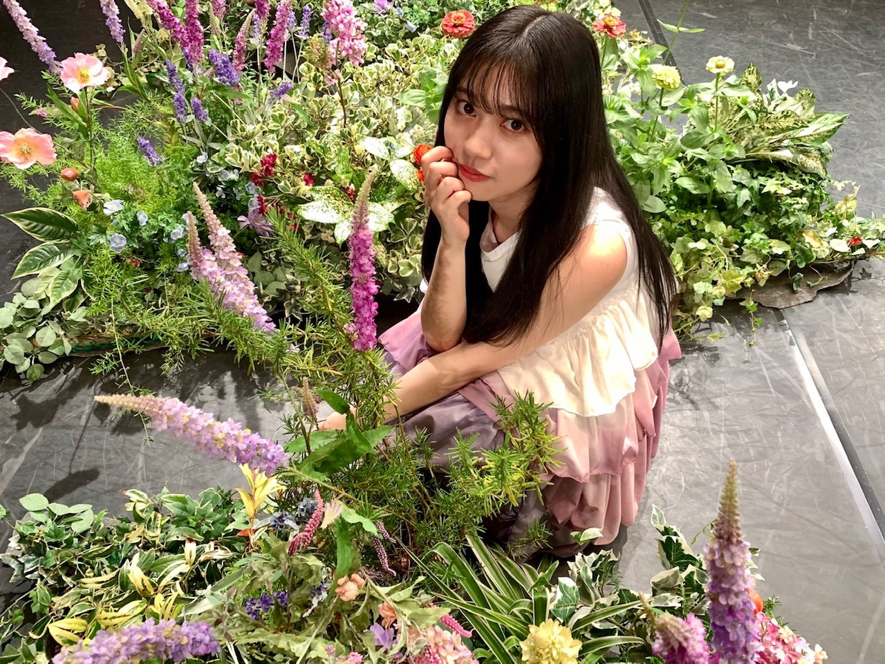
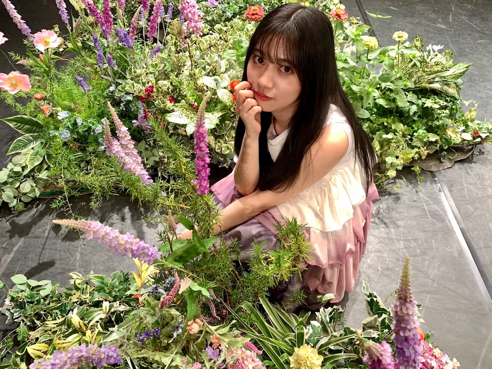

2020/0923Wedお誕生日迎えました。！
今年はまさかの出来事で
世界中、不安が広がっていて
まだまだ、先の見えない戦いではありますが
何事にも終わりはきっとあるだろうし
何回も何回も試練があって乗り越えられた人間。
だからこそ、私達の今があって生きているとより感じさせられました。
地球に生まれて地球に住まわせてもらって
日本に寺田蘭世として生まれて
乃木坂46の一員になり
沢山の人と出逢える事をより嬉しく思える年だと思っています。
いつもはツアーとかでバタバタしてて
中学生から乃木坂46として活動しているので
学生時代は活動しながらの夏休みで宿題や課題も多く
その中でツアーでも覚える事は沢山
とにかく精一杯で一生懸命
暑い中毎日を生きると言うのが私の夏で神宮球場でほんのり涼しさを感じ終わると年を重ねるのがイメージなのですが
少し違う夏も人生経験のひとつだと思います。！
でも、だからこそ自分を見つめたり
周りをより見る時間が増え
改めて感謝を伝えたくなる期間になりました。！
自分の周りにはあたたかい人しか居なくて
それはおこがましい話かもしれませんが
私が私らしく己を持って生きてきたから
出逢えた人達だと誇りを持っています。
そして、皆さんの応援は活動において
本当に心の支えだったとより感じています。！
自粛が無駄にならないようにって
意識はしていましたが
目に見えることで言えば
いつの間にかさくっと料理を作れるようになったり
だいぶ、年頭のがくたびさんが私生活に生きていたり
新しい趣味を見つけたり
色んなことにチャレンジする時間があったり
小さな頃から好きだった細かな作業
ファッションだったりお裁縫だったりに
改めて時間を注いでみたり
色んな作品を観ては感化され
動けば幾らでも自分らしくなれるとより感じました。
この小さな行動が
下半期生きればいいなと。☺️✨
今はそんな気持ちでいっぱいです。
やりたい事大きいスケールのものから
小さな事まで沢山ありますが
ひとまず、大好きな分野で
乃木坂46を知って貰える様に活動したいです。☺️
今年も宜しくお願いします。
そして、末永く宜しくお願い致します。☺️✨
お誕生日は感謝の日です。
私に関わってくださった全ての方に
感謝しています。
こんな時だからこそ
やりたい事が沢山沢山あります故
お力添えも宜しくお願い致します。！！
Instagram公式で始めました。
始められた理由や写真はそちらを見て頂けると
嬉しいです。
私らしさを出せる場所が出来て嬉しいです。✨
 

コメント(1142)
今日も美人さん
(^o^)
メールお返事〜
今日は暑いので、お家では半袖で過ごしてました〜
思う存分秋ファッション楽しみたいのにな。
蘭世ちゃんの今年の秋のマストアイテムは何ですか？
もう夕方ですが、夜まで頑張りましょう☺️
自撮り可愛い♡
制服姿、好きやな〜1番乃木坂って感じ！！
私も蘭世ちゃんの髪色好きだよ！
林ちゃんおめでとう！ですね！！
46時間TVの時の2ショットトーク、すごく良かったので
また2人での撮影とかあったら私も嬉しいです☺️
ミート&グリート、確かにディズニーっぽさありますね！
ドキドキワクワク！
私も振り替えました〜◎
今のところ17日と11月1日に参加させてもらう予定です☺️
お話しするのは約1年ぶりだし緊張でソワソワしちゃうだろな。
お話ししたいこと考えとかなきゃです！
すっごく楽しみ☺️
ブログ消えちゃったんですね、、、
また時間のある時にゆっくり書いてください。待ってます☺️
お部屋でのゆるい蘭世ちゃんも可愛い〜♡♡♡
ブレてるのも好きだよ！
名物、、、良い表現です:-)
インスタも更新ありがとう☺️
#蘭世はオシャレさん ってハッシュタグがピッタリ！
お花×蘭世ちゃん
赤×蘭世ちゃん
って最強だと思うし、相性良いな〜って思います。
長くなってしまいましたが、読んでくれてありがとう☺️
反乱軍のスパイとしてファーストオーダーに
追われながら、応援している
まさとです
オンライン握手会10月11日第二部で申し込みしました
上限の10枚出します
また握手券はたくさん残ってますけど
初めてなのでこの1回にします
うまくできれば次回以降も
申し込みしますね
大変楽しみにしてます
ではまたねバイバイ
おつかれさまです♪
メールたくさん、ありがとう！！
お写真も、ありがとう(^^)
あのね、らんぜのピンクの24じかんTシャツ、とっても似合ってるよ(^^)b
部屋着にしているのですね♪リラックス感もあって、お部屋着にぴったしだね〜。
写真はブレても、みちはまっすぐブレないらんぜ。ブレるお写真はご愛嬌(^^)♪
つうほうと、ぶれるお写真はらんぜの名刺がわりとなりましたね(^^)
あれ、でもそんなにブレてないかも、、、
小さいスマホだとあまりブレを感じないのかな♪
歩きながら撮るほうが、らんぜはかえってブレないのかも、、、
らんぜは独創的ですからね(^^)d
ブログ、下書きざんねんでしたね、、、
ねぇ、がんばったねらんぜTT
大丈夫、大丈夫！おちこまないでね(^^)
それはとてもショックだったね、、、それはへこんじゃうねTT
いんだよ〜、それはきっとまたそうやって、新しい文章をっていう、天の神様からのアドバイスだったんだよ(^^)
ちゃんと待ってるからね♪
たいじょぶさ〜(^^)！
らんぜのメールもいっぱい読んで、インスタも見れて(^^)今日はとても充実してるなあ！
ありがとうね！らんぜ(^^)
まだまだ、こんばんもらんぜに大大大すき〜なキモチを、応援をたくさん秋の夜風にのせて、送りますから(^^)b
クロネコさんよりはやくあっという間に届きますように、ツヨクツヨクらんぜのことを想っていますからね、、、
楽しい夜を、らんぜ過ごしていてくださいね。
ごきげんよう、らんぜ。
また書きますね(^^)/
(インスタの成長を見守る人)
ブログを一生懸命書いてくれてたのに消えてしまったのは残念
たまには気分転換も大事だよー
個別トーク会どんな服着てくれるのか楽しみやわ
もう１つの方の更新、楽しみにしてますよ。
(^.^)
CRYSTALより。
(*・ｪ･*)ﾉ～☆ｺﾝﾊﾞﾝﾜ♪最愛なる蘭世
おかえり、今日も一日お疲れ様
最近さめちゃくちゃコンビニやお肉屋さんのコロッケにハマってる笑
これはやべぇまた太るぞって思ってる
何やろ急に食べたくなるんよね
でもまぁそのうちおさまるだろうけど笑
そういえば今日更新されたひめたんのブログすごく共感できた。
『心配できる相手がいるって幸せ。
だから、「これ言ったら心配させるかな」という優しさから思っていることを周りの人に言わないでいるのだとしたら、お願いです。心配くらいさせてください。
大切な人を想って心配するって、尊いことなんです。負担なんかじゃないです。話してくれてありがとうって思います。
それよりも、貴方が困っているのに気づけないことの方がもどかしい。自分の知らないところで重たい荷物を抱えているなんて想像したら辛いです。
誰も貴方の代わりになることはできない。せめて気持ちを少し分けてください。
…と、貴方の周りの人は思ってるんじゃないかな。』
これはホンマその通りやと思う。
楽し事は二人で二倍悲しい事や辛い事は分け合えば半分。前にも何回か蘭世
まぁでも最近は蘭世
知った時は結構自分で抱えてそうだったからな…。
成長というか大人になったんだな～って感じております
さて今日はこの辺でおやすみしようかな
蘭世
おやすみ蘭世
きっとまた明日も笑顔で(｡･ω･)ﾉﾞ
お疲れ様です。
ブログにモバメ、そしてインスタに通常の活動と慌ただしそうですね。
バタバタしてると、思いがけないミスもあるかと思うから、ゆっくりまったりのペースで進めてくださいね。
いろんな媒体で蘭世との接点も増えたので、それだけで嬉しいからね。
インスタ、着実にレベルアップしてますね。
それに蘭世の個性を表現する場としてベストな場所だと思う。
どんどんいろんなことを発信してくださいね。
毎日楽しみにしてます。
昨日今日と夜空を見上げると月が綺麗に浮かんでいました。
そらを写真で撮る事が好きなので、ワクワクしながら見ています。
決して同じ表情を見せない空、少し蘭世に似てる気がしてます。
今日も1日ありがとう。
夜空を見るには良い季節になりました。
またね。
おつかれさまです♪
インスタ投稿みましたよー！！
タグ付け成功おめでとうございます(^^)！
やりましたね♪
ちゃんとタグから飛んでみましたよ(^^)b
らんぜのあのくまさんのTシャツ、とっても可愛くて素敵だったので、とこのだろう、、、って、思ってたんですよ〜！
なるほど〜、そうだったんだ！
これはなかなか面白い機能ですねぇ。
とっても役立つし、楽しいしかけだ(^^)b
らんせがどんどんプロになっていくので、これからの投稿もますます楽しみになってきますね(^^)♪
そういえば、らんぜ髪色を褒められたそうじゃないですか(^^)
良かったですね！メールで送ってきてくれたお写真のらんぜが現在の髪色なのかな？
少し明るくなったのかな？光かげんもありますしね、、、やーでも褒められて良かったです(^^)d
いつかブルーっぽいのも、らんぜにやってほしいなぁ。きっとすごく似合うと思う(^^)b
まだまだたくさん、らんぜのことを想いながら、たくさん考えて、お月さまに願いごとしてましたよ〜(^^)b
らんぜがずっとずっと幸せでありますように、、、
今日もずっとず〜っと！らんぜのこと大大大すきーだった(^^)！
明日も、よろしくお願いします！
楽しい夜を、らんぜ過ごせていますように。
また書きますね(^^)/〜
今日も一日お疲れ様です。
メールありがとう。
瑠奈ちゃんって雰囲気がらんぜに似ている気がするんだよね。
お誕生日だね。おめでとー。
瑠奈ちゃんと絡むところもっと見たいです。
ブログの片割れどんまいです。
凹まんといてぇー。元気だしてぇーな!
ブレている写真も味があって好きよ。もう名物だよっ。
夜は冷え込むから暖めて眠ってね。
明日も素敵な日になりますように。
またね(｡-ω-)
おやすみなさい
モバメありがとう！！
インスタも見てるよ
だんだん使いこなしてきたんじゃない？
俺は見るので精一杯だけど
ブログ消しちゃったの？
焦らず書いてください☺️
楽しみにしてるから
オンラインミート&グリート応募しました
約1年ぶりにお話しができるのはとても嬉しく思います
部屋の壁とかにはグッズ飾ってもいいのかな？
飾れたらいいなぁー
11日楽しみです
久しぶりすぎて緊張してしまう
お手柔らかに
それじゃまた
おやすみ
こんばんは！
本日もお疲れ様でした！！
モバメありがとうです！
最近過ごしやすい天気で良きですよね！
美しい写真！！！
ありがとうございます！
ブログ楽しみにしていますので、自分のタイミングで書いてください！！
名物になってきましたね！！
明日も頑張りましょう！！(^-^)v
えいえいおー！！
誕生日まで356日！！
ぜーの勢い…
とまらんぜーーー！！！
No.693
1年ぶりくらいかな握手会で話した時を最後に、
何よりお互い顔を見て話せるのがマジありがたい^_^
コロナ禍でもこんなステキなイベントが実現出来るなんて夢にも思ってなかったよ
今日もインスタ投稿ありがとう！
タグ付け出来るようになってたね！
これで蘭世の私服紹介も本格的にスタートだね！
これからも楽しみにしてるねー！
モバメもありがとう！
件名あるメールはちょっとレア感があって嬉しい笑
最近はエアコン使わなくてもいいぐらい涼しくなってきたよね〜
蘭世から頑張ってね言われると嬉しいー！
制服着てる蘭世久しぶりに見たかも！
なんかのお仕事だったのかな？
髪色も髪型も良き！
林ちゃん誕生日！
もう林ちゃんとかすっかり仲良くなったんだね〜
林ちゃん面白そうな子だから蘭世との撮影見てみたい！
ミート&グリート会はちょっと実際に参加した人のレポ見てから応募しようかな〜
何枚でどれぐらい話せるか分からないから
多分参加はすると思うからすごく楽しみ
おれも1年ぶりに蘭世とお話するからめちゃくちゃ緊張してると思うけどお手柔らかに…笑
ブログ…残念だったね…
気長に待ってるから焦らずにゆっくり完成させてね〜！
自撮りがブレてるのは蘭世の名物かも笑
でも可愛いからオールオッケー！笑
ブログ、モバメ、インスタ、色々楽しみに待ってるね！
じゃあまた！
ブログの消失残念だったね。
でも明日はきっと良いことあるよ♪
蘭世にパワー注入！！！
気長にブログの更新待ってますね。
ではでは
今日も沢山のメールを送ってくれて有難う！
最近涼しくなって本当に過ごしやすい天気になりましたねー
でも寒くなると体調の方も崩しやすくなるのでお互い気をつけましょうね。
ミート＆グリートのことを初めて聞いたときに私はディズニーっぽいと思いました;p
でもこういう形で久しぶりに蘭世ちゃんとお話しする事ができるのは本当に嬉しいです！
いつもと違う形で蘭世ちゃんとお話しする事ができるから楽しみではありますがお互い緊張で人見知りしないように気をつけましょうね。
24時間TVのTシャツは個人的にも夏の思い出になっているよ。
久しぶりにテレビで蘭世ちゃんのパフォーマンスがみれたからです:)
確かにブレている写真は蘭世ちゃんの名物ですよねー
でも写真がブレても、ブレなくても蘭世ちゃんのかわいさはすごく分かるです。
今日もinstagramを更新してくれて有難う！
ストーリー機能だけではなく、投稿の方でもタグをつけると世界中の人からもっと見つかりやすくなりますからね！
あとは蘭世ちゃんのアカウントにinstagramさんの方から公式マークが付いたり、プロフィールを書く事でもっといろんな人に蘭世ちゃんそして乃木坂46の事を見つけてもらえると思う！
ボクもたまーに文章書くので分かります。
いーこ、いーこ(--、)ヾ(^^ )
文章書くのも保存もPCのが楽だし復元も使えるのでオススメです。
やっほっす～(o^∀^)
歩きながら寺田蘭世さまきゃわわうれぴーぽーo(￣◎￣)o ﾊﾞﾌﾞｩ♡
ピンク色のお洋服を着たゆる巻き♡らんらん感動ぽっぽぽー壁]ω･U ﾆｬ♡
ほんじつもローストビーフパワー100万馬力でばいころまる( ;-(ｴ)-)ゞｸﾏ
そしてそして、今日はたくさんのモバメとインスタグラムの更新を、ありがとうございました！！(^^)
元気出ましたーーー♪(^^)
文章が消える、本当にショックですよね！！(>_<)
どんまいです！！o(>_<)o
自撮りお写真、すごく良いですね！！
モバメとってて良かったーって思う瞬間でもありますが、本当に良いお写真だからインスタでたくさんの人にも見て欲しい！ なんて気持ちも湧き上がってきちゃいました。
それくらい本当に良いお写真ですよねー♪(人´ω｀*).｡*ﾟ+.*.｡
インスタの最新のお写真も、本当に良い感じ♪(人´ω｀*).｡*ﾟ+.*.｡
部屋着お写真も良い！！･:*:･(*´∀｀*)ｳｯﾄﾘ･:*:･
ブレてるのも定番になりつつあって、心待ちにしているところもあります♪（笑）
少しずつ肌寒さも増してきましたね。
体調崩すことなく、明日も有意義で素敵なお時間を過ごせますように♪o(^-^)o
ではでは♪
9/2のメールのお返事です！
〇1通目
こんにちはの時間だったね！
朝晩と昼の寒暖差が半端ないですよね。
しっかり調節していきたいとおもいます！
蘭世さんに言われたら本当に頑張れます☺️
〇2通目
制服の蘭世さんも可愛いなぁ！！
茶色系ですかね？
この髪の色も大好きだな：）
〇3通目
林瑠奈ちゃんのお誕生日でしたね！
めでてぇ！
蘭世さんと瑠奈ちゃんの世界観で撮影あったら嬉しいな☺️
〇4通目
あ、今月か！
来月のことかと思ってました。笑
確かに言われてみればぽいね。笑
自分は17日と11月1日にしましたので何卒：）
久しぶりすぎて嬉しいけど高確率でしゃべれなくなりそうだー！笑
〇5通目
データとか書いてた文章消えたら凹みますよね…。笑
僕も仕事でやっちゃった時は萎えました。笑
そういう日もありますよね☺️
切り替えていきましょう！
優しくします：）
〇6通目
いいですねぇ☺️
夏の思い出かぁ。
乃木坂の46時間テレビ見たくらいかなぁ。笑
髪型真ん中分け好きです☺️
〇7通目
なんかもうそっちのがいいまであるよね！
安心感がありますよー。笑
また色々送ってね：）
以上ですー！
今月は蘭世さんとおしゃべりできるのがとても楽しみで嬉しいです☺️
枚数は少なめなのですが、何卒よろしくお願いいたします：）
事故る可能性高いけどそこはご容赦くださいねー！笑
では！
悠人⊿
ミート&グリーティング会、申し込んだよ！
なんか、めっちゃ久しぶりに会えると思うとドキドキする
急に会えることになったからね
未だに実感がないというか
でもすごく楽しみだよ！！
画面越しではあるけど、また楽しく会話できたらなって思う
よろしくね！
そしてインスタ、タグを付けるようになったのね！
大きな進歩やん！
僕もインスタ結構やってるけどタグはあんま付けないかもな
ストーリーにもらんぜの世界観のある写真が見れていつもすごく嬉しいよ
そしてメールでは可愛い自撮りも送ってくれて！
制服もやっぱ似合うよ！
部屋着も可愛い、、、
ブレた写真まで送ってくれるのがらんぜメールのいいところだからね
名物というか(笑)
いつもありがとう！
林ちゃんも誕生日だよね
なんか、林ちゃんとの関係ってらんぜがすごく先輩らしく見えて好きだな
そしてブログ、せっかく書いたものが消えてしまうとすごく落ち込むよね、、
ぼくも今日本当に全力で発表文を準備したけど
それが一気に消えたと思うとそれはもう泣いちゃうわ、、
でも元気だして、またゆっくり書いてね
待ってます！
じゃ、今日はこの辺で。
またね！
ユン
インスタタグ付け出来るようになったんやねー
また一歩進化しましたね！
もっともっと蘭世の魅力が世界中に広まりますように。
ミート&グリートとりあえず全日程全部申し込んだよー
久々に蘭世と話すからど緊張しそう(^^;;
ミート&グリートがどんな感じかもわからないから余計にテンパるだろうな(。-∀-)
どんな話するか考えおこうっと！
という事でこのためにiPad買い替えて待ってますね笑
昨日もモバメとインスタありがとう〜
毎日の楽しみが増えたし元気の源になっとるよー
元気と癒しをいつもありがとう
インスタは更新の度に拡散するね。
今日も1日楽しんでこー！
そして良き週末を〜。
蘭世にとって素敵な土日であります様に
おはよう
今日も蘭世
窓開けてたらすごく涼しい風が入ってくるようになった。
秋だな～これがもう少しすると寒くなり冬になる。
そうなったらもう今年も「終わりか～って感じるんだろうな。
一年早いわ。
来年には蘭世
オンラインでも逢えるやんって人もいるけど俺の中ではそれは逢うって言わないんだよな…
変なとここだわりというか想いというかがあるからな…
そこんとこ分かってな。
さてそれじゃ今日も元気に笑顔で一日を過ごそうか！
インスタも上手にタグ付け出来てたしやれることが増えてくると楽しくなるよな
私服紹介楽しみにしてんで
今日も出会う方々や頂けるお仕事に感謝して初心を忘れずに楽しんで笑顔で居られる日にしよう。
産んで育ててくれた御両親にも常に感謝を…
じゃきっとまた後で(´▽｀)
いってらっしゃい！
コメントしてる今はこんばんはなのですが、メール頂いた時間ではこんにちはでしたね！
ここ最近お天気良いですよね〜
昼間はまだ暑いですが、お出掛けしやすい気温になってきましたね！
自撮りありがとうございます〜
自分もその髪色めっちゃ好きですよ！
瑠奈ちゃん誕生日おめでとうですね！！
蘭世さんと瑠奈ちゃんの相性の良さは46時間TVのツーショットトークで分かったので2人での撮影楽しみに待ってますね〜
今回のミート＆グリート参加出来ないのですが、次に機会があれば参加しますね。
保存し忘れは残念ですね。
でも、仕方がない事なのでその話をモバメで聞けた事が良かったと捉えますね！
何事もポジティブに行きましょー
ブレていても可愛い蘭世さん流石です。
通常写真とブレてる写真の2つでセットみたいな所ありますね笑
でも、それも良きですよ！
ずっと大好きですよ。
これからも応援していきます。
秋、ふかまってきましたか？
こちらは、、、また暑くなってきました^^;
なんで、、、、あれ、、、
らんぜの大好きな秋の装いが楽しめますね(^^)
らんぜがたいぶ好きになってきた夏、夏のお洋服さんたちは、出番が1年のびちゃったから、秋のお洋服さんたちにはそのぶん活躍を期待してしまいますね！
今日も、らんぜがらんぜのままで、いられればよいなあと、それはいつもですけど、ツヨク想っています。
人として、らんぜが大好きだよ(^^)
大大大すきだ！
らんぜがこころのままに、今日もいきますように。
ごきげんよう、らんぜ！
また書きますね(^^)/
よい1日を。
インスタ、タグ付けできるようになったんですね！
今まで以上に蘭世ちゃんのファッションを深く知ることができる気がして嬉しい☺️
ブランド×ファストファッションっていうのができるって、ほんとにオシャレさんやと思う！！
今日も1日頑張りましょう！
えいえいおー:-)
私はバイト行ってきます〜
ミートアンドグリード応募してみました〜どんな感じになるのだろうかドキドキソワソワしておりますが当日楽しみにして待ちたいと思います:-p
ではでは今日もあと半日ですが蘭世にとって素敵な一日となりますように(´ｰ∀ｰ`)ฅ
ゆうたーん より
おはようございます。了解です。承知しました。それではこれで失礼します。
おつかれさまです♪
いま、むかしのアニメの曲を聴きながら書いてます♪ぼくどんちゃ〜ん♪って聴こえてきました(^^)
やー、こちらは今すごく暑いです^^;
夏に戻ったよう、、、
東北ではもう紅葉がとっても綺麗になっている様子が、昨日のニュースで映っていました。らんぜのところも、お昼でもかなり涼しいのかな(^^)♪
今日ね、新しいグッズなのかな？らんぜがるーと246の衣装のアクリルのお人形になってるもののお写真を見ましたよ(^^)
あら〜！とっても可愛かったです〜(^^)b
これはゲットしなければ！！
今度のミートあんどグリート会、とにかく着けれるだけのらんぜグッズをそうちゃくしようかなって、今考えてます、、、
バッジとかもキャップに付けたりして、キャップのっけててもらんぜに失礼にならないかな、、、なんか色々気にしちゃって心配なっちゃいます^^;
おやつの時間ですね。
らんぜは最近どんなお菓子にはまっているのかな〜(^^)
まだまだ午後からも、げんきに充実した1日に、しましょう！
えいえいおー
ごきげんよう、らんぜ。
また書きますね(^^)/
お誕生日おめでとうございます。
インスタ更新多くて嬉しいです。
ありがとうー
やぁ
メ―ルありがとう
今日は撮影やったんや
確かに今日も東京200人超えてたもんな…
まだまだ大人数の撮影とかは出来ないだろうけど、徐々に出来ていったらええな。
おれもワクワクやで！
きっとまた後で(｡･ω･)ﾉﾞ
お誕生日おめでとうございます！！
世の中いろいろ大変ですが、これからも頑張ってください！
応援してます！
やぁ
メ―ルありがとう！
ブログ更新されてからこのメール気付いた笑
もうコメントもしたで！
あえてこちらのブログにコメント
同じ中田さん笑
きっとまた後で(｡･ω･)ﾉﾞ
モバメとインスタ、ブログ更新もありがとう〜
どれも似通ったものじゃなくそれぞれの良さを活かした使い方をしていて全部楽しみ方が違って楽しみにしてるよ
これからも蘭世らしく蘭世ペースで更新してね
蘭世サコッシュ使いやすくて愛用にしてるよー。
お出かけが楽しみになる、テンション上がるサコッシュやね
今日はサンクエトワール結成5周年、おめでとうだー！
月日の経過の早さにびっくりだけどめでたいね
今日は天気はパッとしないけど日曜日楽しんでー。
体調崩さない様に気をつけてね。
モバメとインスタ、ブログ更新もありがとう〜
どれも似通ったものじゃなくそれぞれの良さを活かした使い方をしていて全部楽しみ方が違ってワクワクするよ
これからも蘭世らしく蘭世ペースで更新してね
蘭世サコッシュ使いやすくて愛用にしてるよー。
お出かけが楽しみになる、テンション上がるサコッシュやね
今日はサンクエトワール結成5周年、おめでとうだー！
月日の経過の早さにびっくりだけどめでたいね
↑昨日コメント反映されてなかったヤツ
今週もよろしくね〜。
蘭世にとって素敵な一週間であります様に〜
モバメとインスタありがとう〜。
蘭世の世界観、インスタにマッチしてて好きだわ
上手く使いこなしてるね！
僕のモチベーション、活力にもなってる。
いつも元気をありがとう！
乃木坂ファン、蘭世推し以外の人達にも見てもらえる様に拡散するねー
今日も1日楽しもう〜
体調崩さない様に気をつけてね
そして誕生日おめでとう！！
インスタも早速フォローしたよ。
私も蘭世がこの世に生まれてきてくれて、乃木坂に入ってくれてとっても嬉しいよ〜〜〜( ˶ ᷇ ᷆ ˵ )
いつも笑顔と幸せと勇気と元気を届けてくれてありがとう！
最近は画面越しが多くなっちゃってるけど、蘭世をたくさん見れて幸せです❤︎"
素敵な1年を！


まだ凹んでる？
(°▽°)ﾉｼ 〜